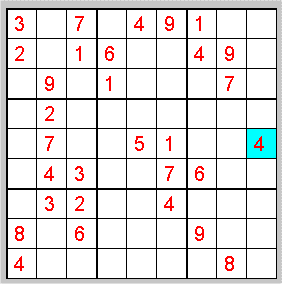

PUZZLE 25: Sudoku

Das Ziel des Spiels ist, in jeder Zeile, Kolonne und Box (eine Box ist durch fette Linien abgetrennt)
genau die Ziffern 1 bis 9 zu haben.
Tipp: Falls Sie die Lösung nicht mit Papier und Bleistift finden wollen, so hilft Ihnen das unten bei Lösung
angegebene Programm. Sie sollten dann dort nicht sofort auf den Button Solve klicken :-)
4. Oktober 2005
Lösung. Wählen Sie dort Problem p5.